I always loved addons from these authors and always wanted to re-run them on an engine with improved graphics (for example, on KMQuake 2), however, the authors did not publish the mod sources, so I took the liberty of recreating the content contained in gamex86.dll from scratch (and namely weapons, monsters and some scripts.). More than a week of hard work - and the result is an almost complete copy (with the exception of some differences, about which a little later).
Link to the original page of the mods authors (archive): web.archive.org...
Since the sources of these mods are not publicly available on the network, I had to do everything myself. Before that, I was not familiar with C ++, so it was very difficult, but the manuals for Quake 2 game.dll helped. Monster's parameters (damage, health, etc.) calculated "by eye", for example, the number of shots from a blaster to shoot down a shield and the like. I marked all the new code with my name (petunindan) to make it easier to find new lines if you suddenly want to fix something. The easiest way to do this is with Notepad ++: turn on file search, select the src_kmq2 folder and search for “petunindan”. For compilation, I used the latest version of Visual Studio for June 2021. In total, it took over a week to write all this. I sincerely hope that the authors of the original will not be angry about all this copying without asking. Otherwise, I'll hide the article. Read the general description of the new code and the main differences from the original at the end of the text.
I adapted mods for KMQuake 2 - I drew icons for new weapons and items. Multiplayer not tested. All new materials are packed in .pk3 so that the old version for regular Quake 2 won't read them. The original mission packs code was taken as a basis, which also introduced a new, smarter AI than in the original.
Since I did not find a way to assign several weapons to one key, I decided to assign a new weapon to other buttons. Default:
V – proximity grenades. Or “bind V use proximity grenades”.
N – feedback laser. Or “bind N use feedback laser”.
M – plasma gun. “bind M use plasma gun”.
Window Of Retaliation - addon for Quake 2, containing 9 levels.
The action takes place after the defeat of Macron. You play the role of a pilot on a search and destroy mission, clearing out the remnants of Strogg's forces.
While on a routine mission, you are shot down on a distant planet owned by Strogg and discover that they are planning a revenge strike. You must figure out the nature of this strike and stop it before the Earth is destroyed.
Window of Retaliation introduces new weapons and monsters to the standard Quake 2 set.
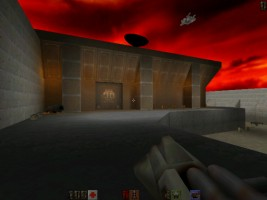
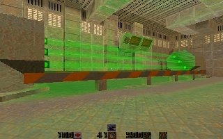
The Armageddon Device - addon for Quake 2, containing 8 levels.
An asteroid about half the size of a moon is heading toward Earth. When he hits, all life on Earth will be destroyed. This is no ordinary piece of planetary junk. This stone has a primitive thermonuclear drive and the most powerful shield we have ever seen. This weapon is Strogg's last hope of victory, codenamed "The Armageddon Device". We received this information when a ship from Earth intercepted the Strogg shuttle en route to an asteroid. The shield is generated and controlled from the reactor on the rock itself. None of Strogg knows the deactivation code. There are three Strogg commanders, each of them knows two digits of the six-digit code. We do not expect them to voluntarily tell us.
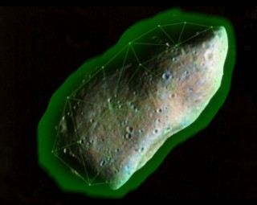
You act as an elite marine with the task of obtaining deactivation codes for the device. Action plan: 1) You will be taken to the estimated location of the start of the asteroid. There is an M-class planet in those places, and we expect to find the Strogg colony there. 2) Your captain will scan the area to find a suitable stealth landing spot. 3) You will lead a team of 4 and try to get a deactivation code from the Strogg commanders. Your battle computer has been adapted to read Strogg cerebral implants and extract the code. This cannot be done while the implant owner is alive. 4) When you find the code, you need to find a way to get to the asteroid and disable the shield. 5) Our warship will destroy the rock with thermonuclear charges. Good luck, soldier!
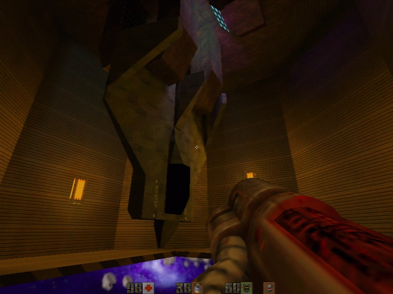
The Earth War - addon for The Armageddon Device, containing 9 new levels. The missions created by Forrest “Gumpsta” Glithero take place on the ground during the Strogg invasion. Exciting action, enemies and weapons from previous expansions. To run this addon, start “The Armageddon Device”, start a new game and select the difficulty. After loading the game, open your console and write “map park”, this command will take you to the beginning of the “The Earth War” campaign.
Air Forces Blaster
Pilots are given a slightly more powerful version of the standard blaster. Fires two charges per shot in quick succession.
Feedback Laser
Awesome weapon. Uses a modified railgun system to charge the high-power laser, but to increase power, the user can feed the outgoing pulse directly through the feedback of the charging chamber. Charging continues until the trigger is released, releasing a powerful beam that destroys everything in its path.
A visible meter shows the charge level as a percentage.
A 100% charge is approximately comparable to a BFG in terms of power.
Attention! Exceeding 102% of the charge overloads the weapon, which can cause a big explosion! You've been warned, soldier!
The weapon does not have a area damage, but it is highly accurate and fast, but requires precise aiming and charge control from the shooter.
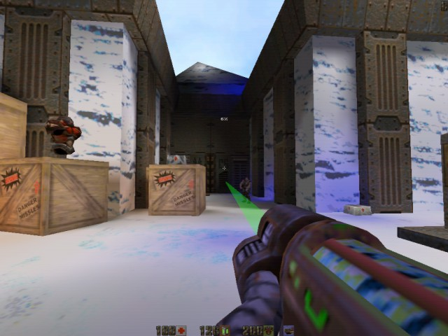
Plasma Gun
This weapon automatically fires charges of superheated gas. The charges have a small area of effect and are very effective in automatic fire.
Thanks to the Loki's Missions team for their kind permission to use their plasma cannon model.
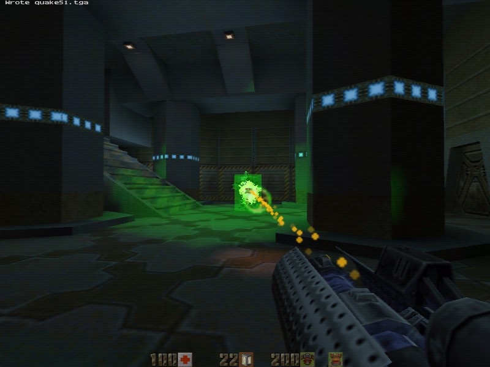
Proximity Grenades
Available for throwing only and cannot be used with a grenade launcher. Fired when an enemy is nearby. Contact grenades can be distinguished from conventional grenades by a yellow marking strip.
Soldier Stormtrooper
He is the elite guard of the Strogg vengeance force. Armed with a powerful screen shield and a machine gun can be a serious opponent.
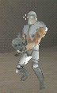
Hornet Class Flyer
An experimental modification of the "Flyer" monster. Strogg attempted to mount a rail gun and shield generator on a frame that was already overloaded.
Deadly in surprise attacks, especially when hiding in a swarm of regular Flyers. It has one drawback: the generator supplying the shield cannot be properly cooled on such a large frame. Overload it and it will explode. As a result, the sparkling and smoking hornet becomes an easy target.
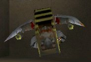
Proxy-Parasite
A parasite with the habit of throwing contact mines. Look where you are going!
Traitors
People who went over to the Strogg side. They are armed with machine guns and usually keep in groups.
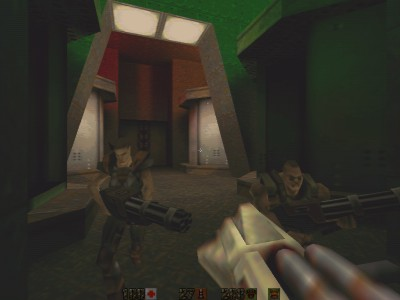
Laser Gladiator
Deadly enemy. Heavily shielded, fast and armed with a feedback laser. Beware!
Tank-General
Top of the tank hierarchy. These guys are slow, but well armed and armored. Especially problematic in groups!
Death Tank
Faster and more aggressive than their fellows. Armed with a plasma cannon and a pulse laser, they won't give you the right to make a mistake! Easily recognizable by the skull and bones mark.
Hyper-Tank
Final boss. Armed with rockets, grenades, blaster and machine gun, uses BFG when things go really bad.
Traitor-Boss
With the use of human DNA, problems arose - the clones were too cunning and rose to the top of the Strogg hierarchy, seizing power. He is also a scientific genius, using Strogg technology to its fullest. Uses a personal cloaking device as well as an arsenal of weapons.
Air Forces Blaster - no different from the original.
Feedback Laser – identical to the original, except that the authors of the original managed to decouple the mechanics of the shot from the animation of the weapon model, I didn't succeed and I had to change the weapon model for a new code.
Plasma Gun - identical to the original + ammo.
Hyperblaster – as in TaD, a green tracer is fired every few shots.
Proximity Grenades – in the original, ordinary grenades were used, but the clockwork was replaced by logic: "The enemy approached - the mine exploded, the ally approached - the mine does not explode." I also tried to do this, but it did not work, so I used the logic of the proxy grenades from the "Ground Zero" addon.
Soldier Stormtrooper – identical to the original.
Hornet Class Flyer – identical to the original.
Proxy-Parasite – the original threw proxy mines next to it. Due to the change in the logic of the proxy grenades, now it throws a mine towards the player, but the “grenade” flag allows monsters to evade their mines and not step on them.
Traitors – identical to the originals, except for some minor differences. And yes, my code is a huge jumble for them, please don't laugh :D . But it works! Unless the boss can sometimes forget to turn the shield on / off.
Laser gladiator – identical to the original.
Tank-General – identical to the original.
Death Tank – identical to the original.
Hyper-Tank – identical to the original. The weapon code was spied on in StroggDM.
In one of the missions there is a task to destroy several monsters, including a tank sitting in a chair. I struggled with this problem for a long time, he stubbornly refused to be counted, but suddenly I added something and he began to be counted. What I added - I myself did not understand, but did not touch it and closed the file without breathing.
DNA Scanner - The only thing I couldn't do. There are “trigger_dna” on the map and they are only activated when the player has a “DNA Scanner” in his inventory. As soon as I didn't try to do it, nothing worked. The main problem was to find the code for checking the player's inventory - there are simply no examples, and all attempts to write something myself caused the game to crash. Therefore, I had to make sure that the triggers were activated in any case.
The final riddle with numbers is still a tough nut to crack, but I saw through it, unlike the previous one. As I understand it, in the original, the developers used some kind of system involving a trigger, but I did it my own way, it seems to work.
Mod Developers – Roseville Missions Team.
KMQuake2 adaptation - Petunindan
All original mod documentation is in the “rose_docs” folder.
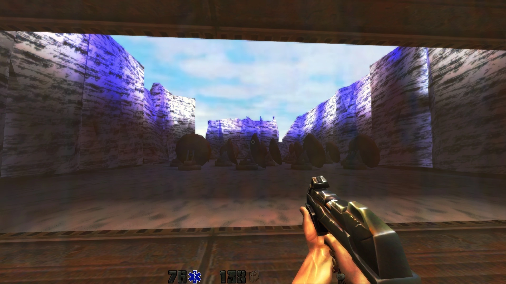
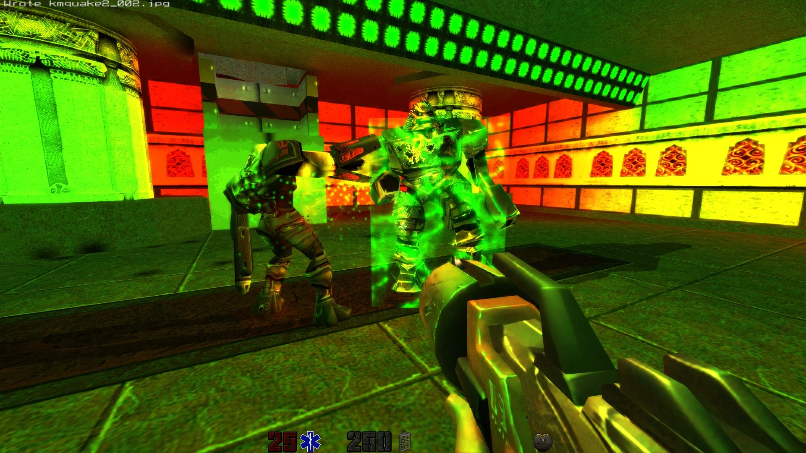